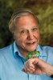

Life - Complete Series (2009)


Four years, 3000 filming days, ten part blockbuster.

Country:United Kingdom, 17 hours
Spoken languages:English
Genres:Documentary
Director(s):
Writer(s):
Video Codec:Unknown
Number: 2292
TMDb Rating:


8.2/10 (294 votes)
Certification:TV-G
Storyline:
David Attenborough looks at the extraordinary ends to which animals and plants go in order to survive. Featuring epic spectacles, amazing TV firsts and examples of new wildlife behaviour.
Cast: 
David Attenborough (voice)
Self - Narrator#10
Medium: Original DVD,
Loaned: No
Aspect ratio: Unknown